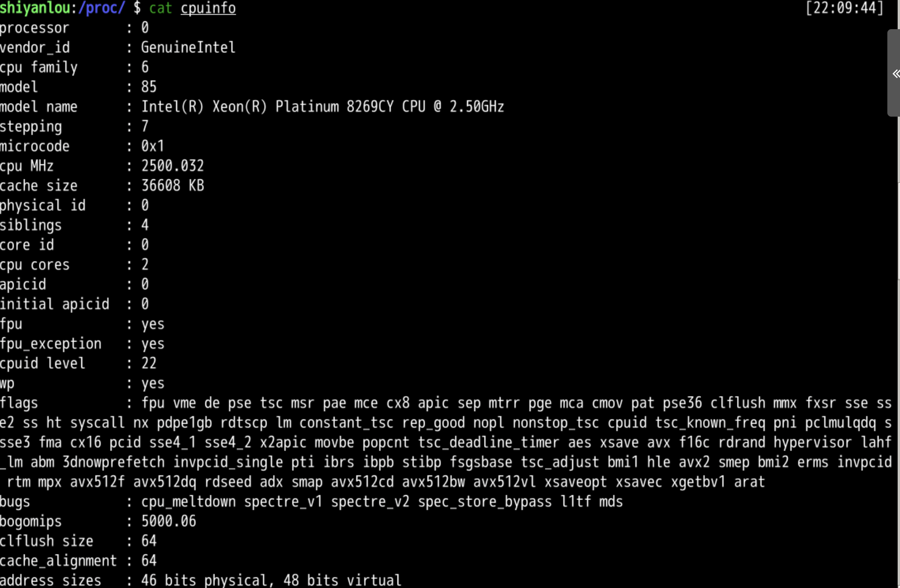
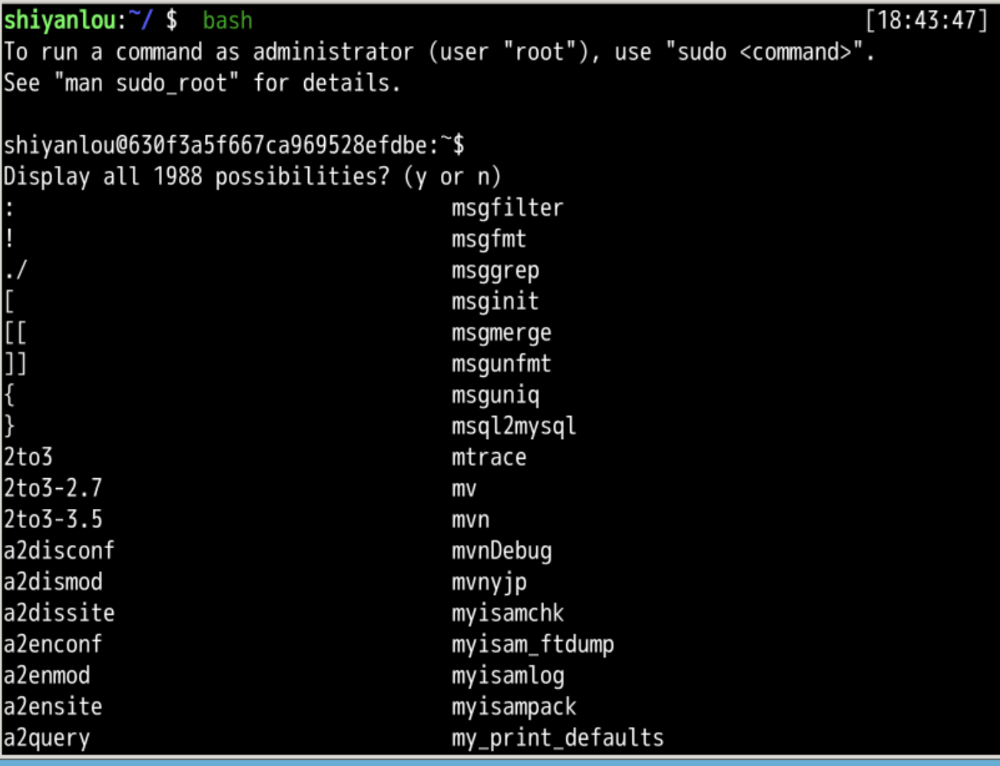
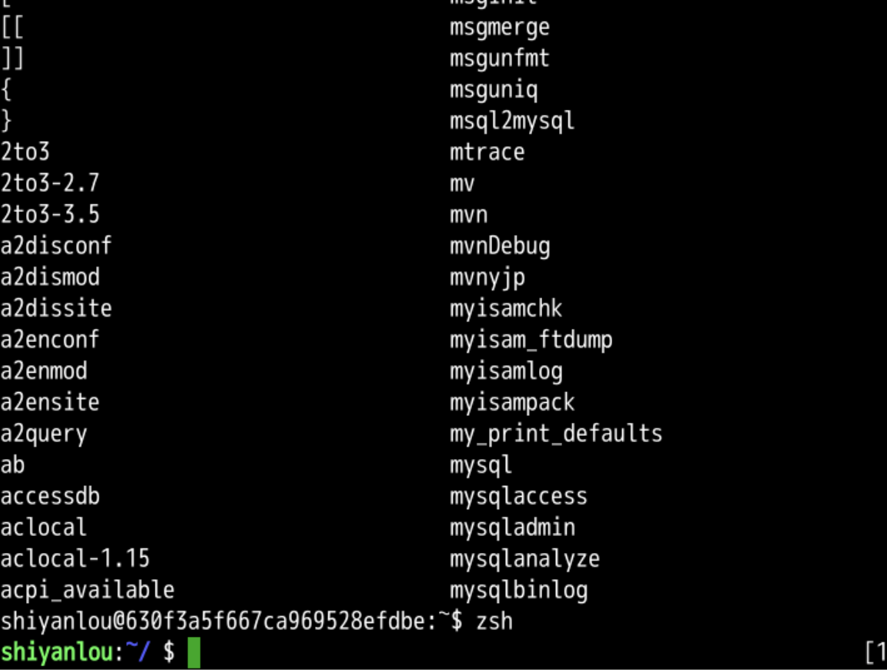
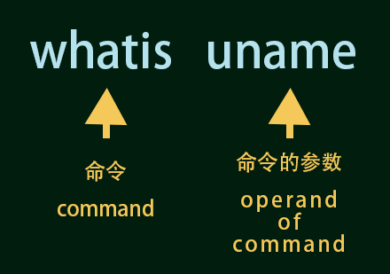

灵魂之问 whatis
回忆上节课 😌
- 我们上次了解路径操作
- cd
- pwd
- 找到进程文件夹
- proc
- 还了解了进程观察
- ps -ef
- ps aux
- 进程文件夹里面有些东西
- version
- dmazoneinfo
- cpuinfo
- 接下来咱们用 cat，看看去？
- 走！🤪

探索
- 我们上次在系统里面乱转
- 🤣
- 发现了各种信息各种信息
- 比如
- cpuinfo
cd /proc
ls
cat cpuinfo

- cpuinfo就是/proc下面的文件
- 里面存储cpu的信息
- 可以用cat把里面内容输出到标准输出流
回忆学习过的命令
-
回忆一下我们现在总共学了多少命令？😋
- cd
- pwd
- ls
- cat
- uname
-
那Linux 总共有多少条命令呢？🤔
总共
-
- 首先切换到 bash 状态
#bash是另一个常用的shell
bash
-
- 连续按两下 tab
-
我们就可以看到所有命令的总量
- 大概 1900+ 🤪
- 然后他就问你是否都列出来
- 选择 yes，一行一行往下看
- 这可太多了

- 我们还是从bash退回到zsh吧
zsh
- 使用 ctrl+c 退出
- 然后我们用 zsh 切换回到 zsh
#zsh是我们这个环境里面的默认shell
zsh

命令太多，记不下来怎么办？🤔
-
用命令去记住命令
- 用魔法打败魔法 😎
-
whatis就是我们今天要学的新命令- 顾名思义
whatis - 你是干嘛的？
- 顾名思义
whatis可以告我们某条命令是干什么用的
whatis uname

- 这样就可以让
whatis命令告诉我们命令用法- 一般结果是英文的
whatis会用最简单的语言形容该命令whatis就像水晶球一样神奇 🥳
其他命令
- 我们再试试用 pwd 发出灵魂之问😎
whatis pwd
- 这次 whatis 的参数是
pwd - whatis 可以告诉我们
pwd是输出当前工作路径
我们再试试 cat 😋
whatis cat
- 使用方向键 ⬆️
- 重复上一命令
- 使用 ctrl️+w
- 退格一格单词
- 再输入 cat
- 这样我们就得到了
- whatis cat
- cat 是合并输出到屏幕（标准输出流）🥳
灵魂发问 🤪
- 这次烧脑的来了
whatis whatis
- 用whatis 可以终极发出灵魂之问
- whatis你自己是干嘛的？

- whatis 说我是显示在线手册说明的 😏
- 但是whatis稍微有点简略
- 能否更详细的查询命令呢？
- 咱们下次再说！